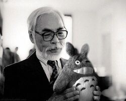

History

Initially Studio Ghibli was created with the aim of producing animated films whose production was led by Hayao Miyazaki and Isao Takahata. In 1997, Studio Ghibli merged with Tokuma Shoten, but finally became an independent company in 2005.Today, Studio Ghibli has become a strong presence in the animation industry. Studio Ghibli's works are so famous globally, this studio even has a special museum displaying the animated aesthetics of Studio Ghibli films and also themed cafes in various parts of the world with the 'Ghibli' theme.